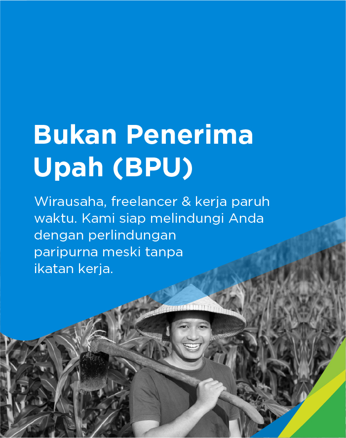
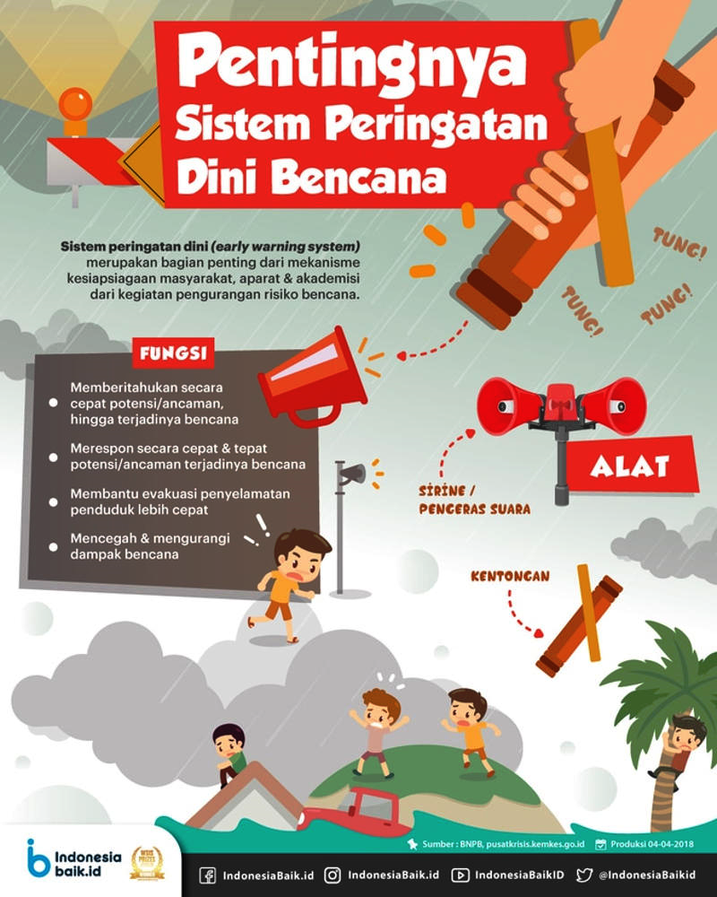

Penerima Upah
Mendaftar OnLine Peserta Jamsostek Penerima Upah
Selengkapnya Klik Banner
Mendaftar OnLine Peserta Jamsostek Penerima Upah
Selengkapnya Klik Banner
Mendaftar OnLine Peserta Jamsostek Bukan Penerima Upah
Selengkapnya Klik Banner
INFORMASI LENGKAP TENTANG PROSEDUR PERINGATAN DINI DAN PROSEDUR EVAKUASI KEADAAN DARURAT
Prosedur Evakuasi
Segera tinggalkan gedung sesuai dengan petunjuk team evakuasi tanggap darurat atau ikuti arah jalur evakuasi/arah tanda keluar, jangan kembali untuk alasan apapun:
1. Turun atau berlarilah ikuti arah tanda keluar, jangan panik, saling membantu untuk memastikan evakuasi selamat
2. Wanita tidak boleh menggunakan sepatu hak tinggi dan stoking pada saat evakuasi; Beri bantuan terhadap orang yang cacat atau wanita sedang hamil
3. Berkumpul di daerah aman (muster point) yang telah ditentukan, tetap berkumpul sambil menunggu instruksi selanjutnya, pengawas team tanggap darurat dibantu atasan masing-masing mendata jumlah karyawan, termasuk yang hilang dan terluka lalu melaporkan kepada koordinator.
Prosedur Evakuasi Keadaan Darurat Kebakaran
1. Tetap tenang dan jangan panik
2. Segera menuju tangga darurat yang terdekat dengan berjalan biasa dengan cepat namun tidak berlari
3. Lepaskan sepatu hak tinggi karena menyulitkan dalam langkah kaki
4. Janganlah membawa barang yang lebih besar dari tas kantor/tas tangan
5. Beritahu orang lain / tamu yang masih berada didalam ruangan lain untuk segera melakukan evakuasi
6. Bila pandangan tertutup asap, berjalanlah dengan merayap pada tembok atau pegangan pada tangga, atur pernafasan pendek-pendek
7. Jangan berbalik arah karena akan bertabrakan dengan orang-orang dibelakang anda dan menghambat evakuasi Segeralah menuju titik kumpul yang ada di tempat tersebut untuk menunggu instruksi berikutnya.
PERINGATAN DINI DAN EVAKUASI DARURAT TERHADAP GEMPA BUMI
1. Pejabat/pegawai penghuni lantai memberitahukan adanya gempa bumi kepada Petugas Tanggap Darurat Lantai
2. Petugas Tanggap Darurat Lantai memberitahukan kepada Petugas Tanggap Darurat Gedung dan Petugas Tanggap Darurat Listrik
3. Petugas Tanggap Darurat Gedung membunyikan alarm atau mengumumkan adanya gempa bumi
4. Petugas Tanggap Darurat Listrik melakukan pemutusan aliran listrik melalui panel listrik
5. Petugas Tanggap Darurat Lantai mengumpulkan Massa (penghuni gedung).
Apabila massa dapat dikumpulkan, maka dilakukan evakuasi. Apabila massa tidak dapat dikumpulkan, maka Petugas Tanggap Darurat Lantai memberitahukan bahwa massa tidak dapat dikuasai kepada:
1. Petugas Bencana Alam
2. Petugas Tanggap Darurat Gedung.
Petugas Tanggap Darurat Gedung melaporkan adanya gempa bumi kepada:
1. Dinas Bencana Alam (BNPB) Kabupaten Bolaang Mongondow dan Petugas Pelayanan Kesehatan Petugas Tanggap Darurat Lantai dan Petugas Tanggap Darurat Gedung melakukan koordinasi untuk evakuasi
2. Petugas Tanggap Darurat Lantai memberitahukan kepada seluruh penghuni ruangan untuk evakuasi melalui tangga darurat lantai atau tempat yang aman dari gempa
3. Petugas Tanggap Darurat Lantai mengarahkan kepada seluruh penghuni ruangan untuk berjalan secara tertib, tidak berlari, tidak menggunakan lift, dan berbaris secara teratur untuk menuju ke tempat aman yang telah ditentukan (assembly point)
4. Petugas Tanggap Darurat Lantai melaksanakan absensi untuk mengetahui orang-orang yang turun bersamanya
5. Petugas Pelayanan Kesehatan melaksanakan Triage (pemilahan kondisi kesehatan pejabat/pegawai yang dievakuasi) berdasarkan kondisi kesehatan korban dan memberikan pertolongan kesehatan
6. Koordinator Tanggap Darurat memberitahukan kepada seluruh penghuni gedung tentang situasi keamanan gedung.